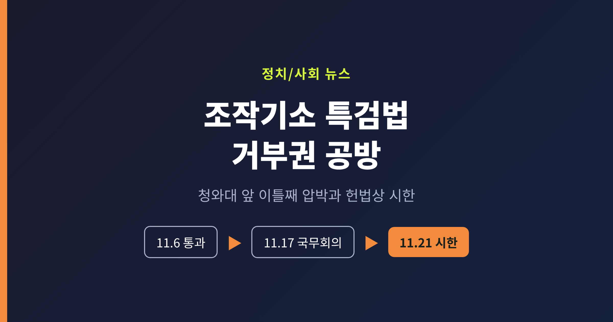
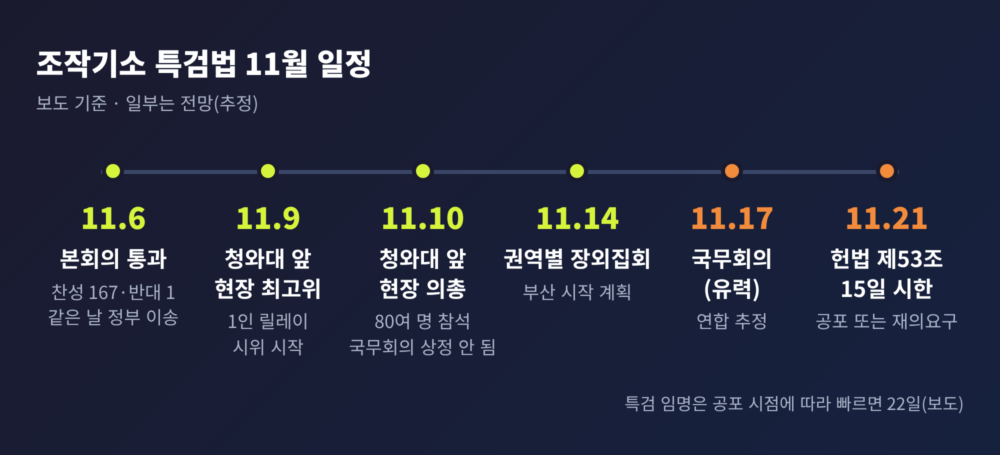
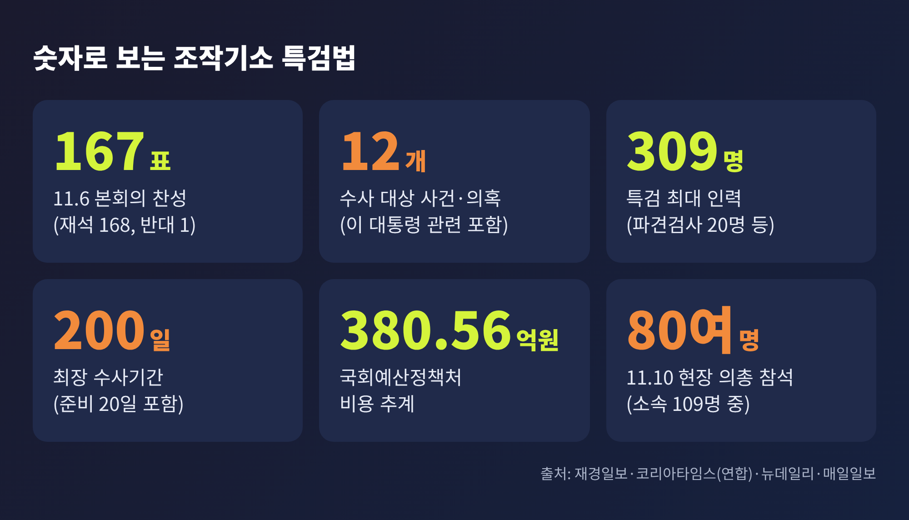
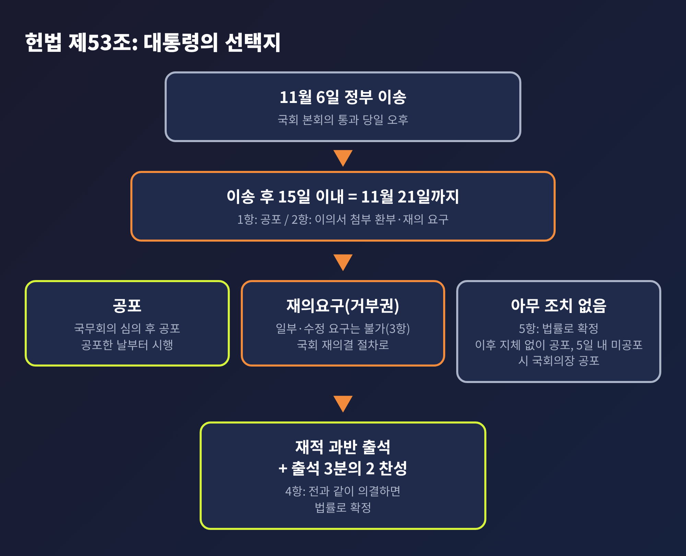
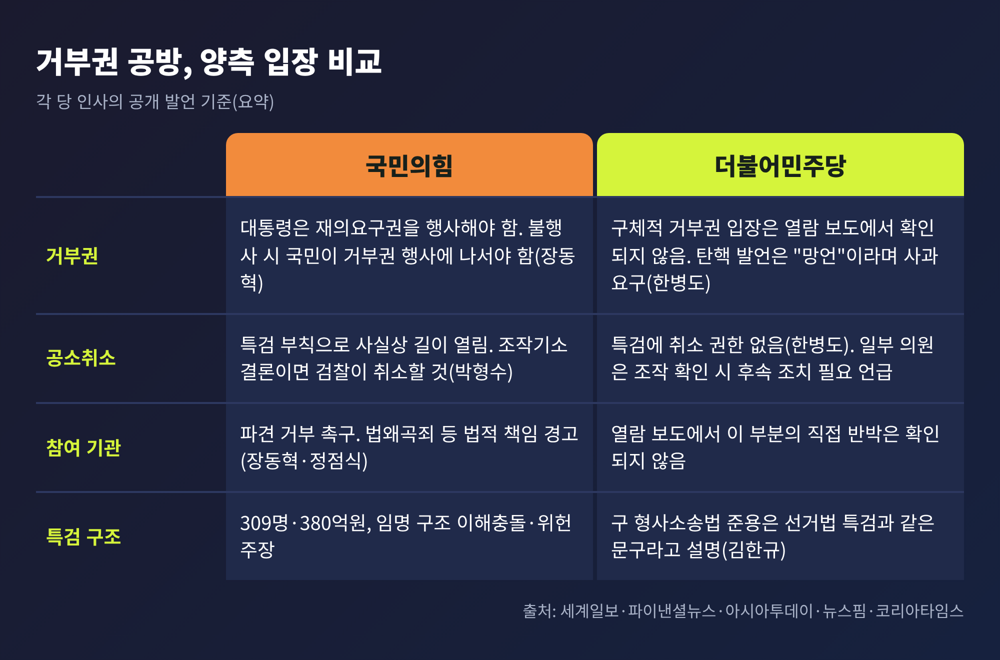
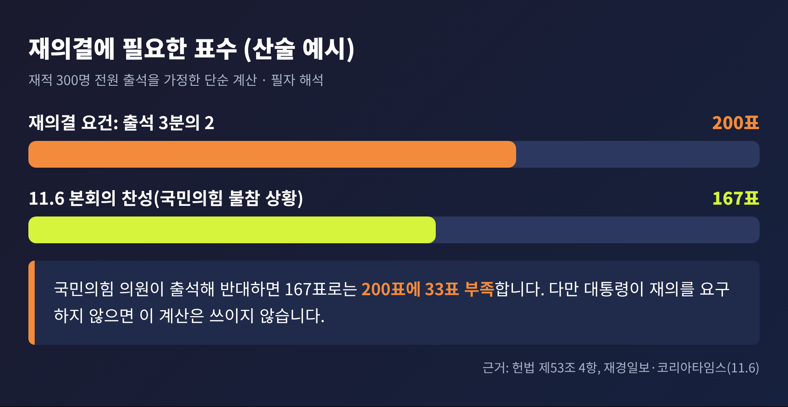

조작기소 특검법 거부권 공방, 청와대 앞 이틀째 압박과 21일 시한

세 줄 요약
- 국민의힘은 11월 9일 청와대 앞 현장 최고위원회의, 10일 현장 의원총회를 열고 이재명 대통령에게 조작기소 특검법의 재의요구권(거부권) 행사를 촉구했습니다.
- 법안은 6일 오후 정부로 이송됐고, 헌법 제53조에 따라 이송 후 15일 이내인 21일까지 공포 또는 재의요구 여부가 정해져야 합니다. 국무회의 상정은 17일이 유력합니다.
- 야당은 특검 참여 기관의 법적 책임까지 거론했고, 여당은 "특검에 공소취소 권한이 없다"며 맞섰습니다. 대통령의 선택은 아직 공개되지 않았습니다.
■ 무슨 일이 있었나: 이틀 연속 청와대 앞
이번 글에서는 조작기소 특검법을 둘러싼 거부권 공방을 헌법상 절차와 정치적 계산에 초점을 맞춰 정리해 보겠습니다. 법안의 국회 통과 경과는 앞선 글에서 다뤘으므로, 오늘은 그 이후의 압박 국면에 집중합니다.
10일 오전, 국민의힘은 서울 종로구 청와대 사랑채 앞에서 현장 의원총회를 열었습니다. 전날인 9일에는 같은 장소에서 현장 최고위원회의를 연 데 이어, 이틀 연속 청와대 앞으로 나온 것입니다. 소속 의원 109명 가운데 80여 명이 참석한 것으로 보도됐습니다.
의총에 앞서 김승수 원내운영수석부대표는 정을호 청와대 정무비서관에게 '특검법 철회 요구서'를 전달했습니다. 청와대 앞 1인 릴레이 시위도 이어지고 있습니다. 9일에는 정점식 원내대표가, 10일에는 우재준 최고위원이 첫 주자와 이튿날 주자로 나섰습니다.

■ 왜 중요한가: 시한이 정해진 선택
이 공방이 단순한 장외 여론전으로 끝나지 않는 이유는 시계가 돌아가고 있기 때문입니다. 법안은 6일 본회의를 통과했습니다. 재석 168명 가운데 찬성 167명, 반대 1명이었고, 국민의힘은 필리버스터가 끝난 뒤 표결에 참여하지 않았습니다. 반대표는 개혁신당 이주영 의원이 던진 것으로 보도됐습니다.
같은 날 오후 법안은 정부로 이송됐습니다. 청와대 관계자는 10일 제48회 국무회의 계획이 이미 정해진 뒤에 법안이 도착했다며, 상정 시기는 "이송 시점, 긴급성의 정도 등을 고려해" 정한다고 설명했습니다. 다음 회의 상정이 의무는 아니라는 말도 덧붙였습니다. 결국 이날 국무회의에는 오르지 않았고, 연합뉴스는 17일 상정을 가장 유력하게 봤습니다. 다만 이는 기자의 추정이며 공식 확정은 아닙니다.
장동혁 대표는 이를 두고 대통령이 책임을 국무총리와 국무위원에게 넘기려는 것이라고 비판했습니다. 청와대의 설명은 일정상의 판단이라는 것이어서, 양측의 해석이 갈립니다.

■ 거부권 절차와 시한: 헌법 제53조
여기서 헌법 조문을 짚어두겠습니다. 제53조 1항은 국회에서 의결된 법률안이 정부에 이송되어 15일 이내에 대통령이 공포한다고 정합니다. 2항은 이의가 있을 때 같은 기간 안에 이의서를 붙여 국회로 환부하고 재의를 요구할 수 있다고 규정합니다. 3항에 따라 법안의 일부만, 또는 수정해서 재의를 요구할 수는 없습니다.
이송일이 6일이므로 15일째는 21일입니다. 뉴스핌은 17일 국무회의가 이 시한 전 마지막 정례 국무회의라고 짚었습니다. 선택지는 세 갈래입니다.
첫째, 공포입니다. 국무회의를 거쳐 공포하면 이 법은 공포한 날부터 시행됩니다. 둘째, 재의요구입니다. 셋째, 아무 조치도 하지 않는 경우입니다. 제53조 5항은 기간 안에 공포나 재의요구가 없으면 그 법률안이 법률로서 확정된다고 정합니다. 이후 대통령이 지체 없이 공포해야 하고, 5일 안에 공포하지 않으면 국회의장이 공포합니다.

■ 재의결 요건과 의석 구조
재의요구가 이뤄지면 국회는 재의에 붙입니다. 제53조 4항에 따라 재적의원 과반수 출석과 출석의원 3분의 2 이상 찬성으로 전과 같이 의결하면 법률이 확정됩니다. 재적 300명이 모두 출석한다면 200표가 필요한 셈입니다.
숫자를 비교해 보겠습니다. 6일 표결의 찬성은 167표였습니다. 다만 이는 국민의힘이 표결에 불참한 상황의 수치입니다. 국민의힘 의원이 출석해 반대하면 167표로는 200표에 못 미칩니다. 6월 재보선 직후 보도 기준으로 민주당은 161석, 국민의힘은 110석이었고, 10일 기사들은 국민의힘 소속을 109명으로 적었습니다. 이후 변동 여부는 확인하지 못했습니다.
이어지는 내용은 필자의 해석입니다. 거부권이 행사되면 재의결이 쉽지 않은 구조인 것은 분명합니다. 그러나 법안을 처리한 여권 소속 대통령이 스스로 재의를 요구할지는 별개의 문제이며, 그 판단은 현재까지 공개되지 않았습니다. 의석 계산은 가정 시나리오에 가깝습니다. 야당이 당장 확보할 수 있는 수단이 거부권 행사를 촉구하는 여론전과 헌법소원 검토 정도라는 점이 이번 공방의 배경입니다.

■ 쟁점 1: 참여 기관의 법적 책임 압박
공방에서 가장 날이 선 대목은 특검에 참여하는 사람들을 향한 경고입니다. 장동혁 대표는 거부권이 행사되지 않으면 공소청장, 경찰청장, 중대범죄수사청장, 법무부 장관이 법왜곡죄로 처벌받을 수 있다고 주장했습니다. 특검에 파견되는 300명, 법안을 처리한 민주당 의원, 청와대 참모도 책임을 질 수 있다고 했습니다.
정점식 원내대표는 공소청과 중대범죄수사청에 검사와 수사관 파견을 거부하라고 촉구했습니다. 현행법상 두 기관에는 수사권이 없어 특검에서 수사하는 것은 법을 어기는 일이라는 논리입니다. 공소취소에 가담한 사람은 훗날 수사와 처벌 대상이 될 수 있다는 경고도 했습니다.
이는 어디까지나 국민의힘의 주장입니다. 법왜곡죄가 이런 경우에 실제로 적용될 수 있는지는 열람한 보도에서 법리적으로 검증되지 않았습니다. 양당의 공방을 이해할 때는 주장과 확인된 사실을 구분하는 편이 좋겠습니다.
■ 쟁점 2: 공소취소 가능성과 여권의 반박
법안의 최초안에는 특검이 기존 사건을 넘겨받아 공소 유지 여부를 판단하는 조항이 있었습니다. 심사 과정에서 공소취소권과 사건이첩 요구권은 삭제됐습니다. 한병도 민주당 원내대표는 "특검은 공소를 취소할 수도 없고 기존 재판을 취소할 권한도 없다"고 말했습니다.
그러나 논란은 남아 있습니다. 부칙이 개정 전 형사소송법의 검사 권한을 준용하기 때문입니다. 뉴스핌은 개정 전 법에서 검사가 1심 판결 전까지 공소를 취소할 수 있다는 점을 짚었습니다. 법사위 야당 간사인 박형수 의원은 조작기소라는 결론이 나오면 검찰이 스스로 취소할 것이라고 내다봤습니다.
민주당 안에서도 온도 차가 있습니다. 김의겸 법사위 여당 간사는 명백한 잘못이 있다면 재판부 판결이나 공소취소도 가능하다는 입장을 밝혔습니다. 김남준 의원은 확실한 원상복구와 재발방지책이 이행돼야 한다고 했고, 박주민 의원은 공소취소를 하지 않는 것이 맞느냐고 물었습니다. 지도부의 공식 입장과 결이 조금 다릅니다.

■ 쟁점 3: 위헌 논란과 임명 구조, 탄핵 발언
뉴스핌은 이 법의 3대 쟁점으로 위헌성, 이해충돌, 공소취소를 꼽았습니다. 위헌성 논란은 지난 10월 2일 개정 형사소송법으로 검사의 직접수사권이 폐지됐는데도 특검법 부칙이 이를 되살려 준용한다는 데서 나옵니다. 민주당의 천준호 의원은 입법정책의 선택이라고 반박했습니다.
이해충돌 논란은 임명 구조에서 나옵니다. 민주당, 국민의힘, 조국혁신당이 각 1명을 추천하고 대통령이 이 중 1명을 임명합니다. 국회 검토보고서가 현직 대통령 관련 수사에서 여당이 추천하는 구조의 문제를 짚었다는 점이 전해졌습니다. 반면 수사 대상이 대통령이 아니라 검찰 등 기관이므로 충돌이 아니라는 반론도 있습니다.
공방은 발언 수위로도 번졌습니다. 장 대표는 "이 법에 대해 거부권이 행사되지 않는다면 대한민국 전체가 나서서 거부권을 행사해야 한다"고 말했고, 필요하다면 탄핵할 수 있는 힘을 달라고도 했습니다. 한병도 원내대표는 이를 "망언"으로 규정하며 "석고대죄"를 요구했고, 위헌 정당 해산심판 청구 대상이 될 수 있다고 맞받았습니다. 어느 쪽 표현이든 수위가 높다는 점은 부인하기 어렵습니다.
■ 특검의 규모와 향후 일정
법안이 공포되면 특검 구성이 이어집니다. 수사 대상은 이재명 대통령 관련 사건과 문재인 정부 시기 사안을 포함해 12개입니다. 대통령 관련 건수는 보도마다 6건과 7건으로 엇갈려, 여기서는 건수를 특정하지 않습니다. 인력은 최대 309명, 기간은 준비 20일을 포함해 최장 200일입니다. 국회예산정책처의 비용 추계는 380억 5,600만 원입니다.
특검 임명은 빠르면 22일로 점쳐진다고 코리아타임스가 전했습니다. 다만 이는 공포 시점에 연동되는 일정이라 변동될 수 있습니다.
확인된 앞으로의 일정을 정리하면 이렇습니다. 14일에는 국민의힘이 부산을 시작으로 권역별 장외집회를 계획하고 있습니다. 1인 시위 기한은 16일까지라는 보도와 거부권 행사 때까지라는 보도가 엇갈립니다. 17일 전후 국무회의에서 공포안이 심의될 전망이고, 21일이 헌법상 시한입니다.
■ 전망: 17일 이후가 분수령
정리하면 이렇습니다. 국민의힘의 압박 수위는 17일 국무회의와 21일 시한이 다가올수록 높아질 가능성이 큽니다. 파이낸셜뉴스는 17일 전후로 공방이 더 격화될 것이라고 전망했습니다. 다만 매일일보는 장외투쟁이 실제 여론 변화로 이어질지는 미지수라고 평가했습니다.
대통령에게 열린 길은 분명합니다. 공포하거나, 재의를 요구하거나, 기간을 넘겨 확정되게 하는 것입니다. 어느 쪽이든 정치적 비용이 따릅니다. 재의요구는 여권 내부의 입법 의지와 부딪히고, 공포는 야당의 위헌·방탄 공세를 감수해야 하기 때문입니다. 이 역시 해석이며 결과는 알 수 없습니다.
결국 남는 것은 하나입니다. 절차는 헌법이 정해 두었고, 선택은 아직 내려지지 않았다는 사실입니다. 17일 국무회의 이후 상황을 지켜보며, 이 글도 새로운 사실이 확인되는 대로 이어 가겠습니다.
참고한 보도
- 파이낸셜뉴스(연합·뉴스1), 2026.11.10: https://www.fnnews.com/news/202611101213584521
- 세계일보, 2026.11.10: https://www.segye.com/newsView/20261110515964
- 한국일보, 2026.11.10: https://www.hankookilbo.com/News/Read/A2026111010160004833
- 아시아투데이, 2026.11.10: https://www.asiatoday.co.kr/kn/view.php?key=20261111010003931
- 뉴데일리, 2026.11.10: https://www.newdaily.co.kr/site/data/html/2026/11/10/2026111000160.html
- 프레시안, 2026.11.10: https://www.pressian.com/pages/articles/2026111011193400901
- 매일일보, 2026.11.10: https://www.m-i.kr/news/articleView.html?idxno=2016612
- 뉴스핌, 2026.11.10: https://www.newspim.com/news/view/20261110001264
- 파이낸셜뉴스(연합), 2026.11.9: https://www.fnnews.com/news/202611092000007973
- 재경일보, 2026.11.6: https://news.jkn.co.kr/post/1075108
- 코리아타임스(연합), 2026.11.6: https://www.koreatimes.com/article/11630663
- 국가법령정보센터, 대한민국헌법 제53조: https://www.law.go.kr/LSW//lsSideInfoP.do?lsiSeq=61603&joNo=0053&joBrNo=00&docCls=jo&urlMode=lsScJoRltInfoR
#조작기소특검법 #특검법거부권 #재의요구권 #헌법53조 #국민의힘 #더불어민주당 #국무회의 #재의결요건 #정치뉴스